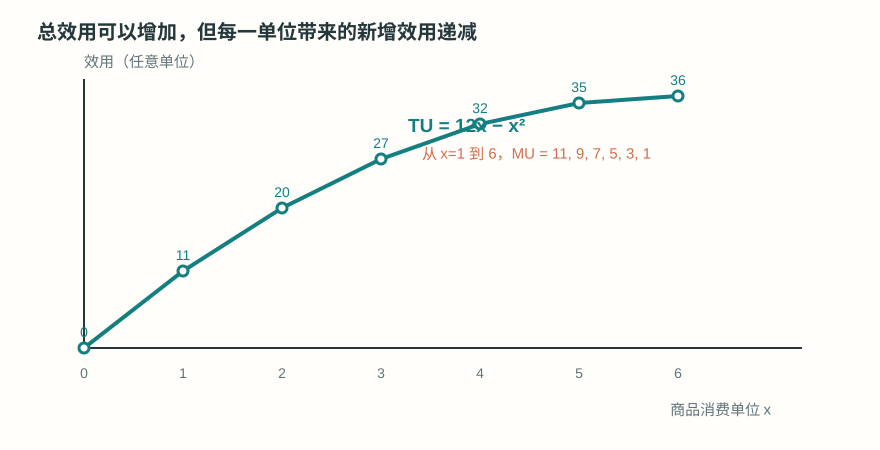
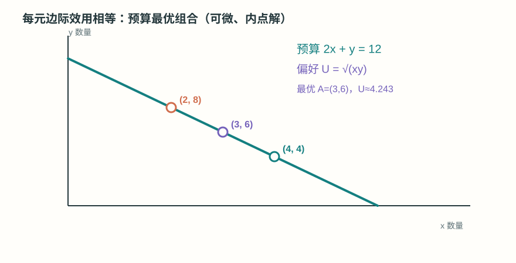

CHAPTER 08 · MICROECONOMICS
消费者选择（上）：效用理论
当偏好遇到预算约束，如何把一种直觉变为可核算的最优消费束？
效用：给偏好排序，而不是测量快乐绝对值
你手里有12元，正在考虑购买两种食品。如果只问“哪种更喜欢”，很容易忽略它们的价格和组合关系。消费者选择理论需要把偏好与可购买范围放在同一个问题里。经济学使用效用函数表示偏好顺序：若消费束 A 优于 B，则可以用 U(A)>U(B) 来表示；这里的效用数字不是仪器测得的快乐强度，也不能直接跨个人比较。
在只关心排序的序数效用解释中，如果把每个效用值经过严格递增的函数变换，消费者偏好和最优消费束都不改变。因此不能把某个人的“效用8”简单理解成另一个人“效用4”的两倍快乐。
总效用与边际效用递减：一个清晰的数值例子
先单独研究某一种商品 x，使用假设函数 TU(x)=12x−x²，其中 x 取0至6的整数单位。总效用从0开始，消费第一单位后为11，第二单位后为20……直到消费第六单位后为36。边际效用是“再增加一个单位带来的总效用增量”，依次为11、9、7、5、3、1。

| 数量 x | 总效用 TU | 该单位边际效用 ΔTU |
|---|---|---|
| 0 | 0 | — |
| 1 | 11 | 11 |
| 2 | 20 | 9 |
| 3 | 27 | 7 |
| 4 | 32 | 5 |
| 5 | 35 | 3 |
| 6 | 36 | 1 |
递减边际效用描述的是这类偏好形状，并不是所有商品、所有人以及所有消费规模上的自然定律。互补商品、网络产品和耐用品可能具有更复杂的使用价值结构。
预算约束把偏好限制在可行消费束内
现在改为讨论两种商品 X、Y：X 的单价 Px=2元，Y 的单价 Py=1元，收入预算 I=12元。用 x、y 表示两种商品的数量，可行集合满足 2x+y≤12。横轴增加一单位 X 要少买两单位 Y；这是当前预算线的斜率，不是消费者愿意交换的主观偏好。
选择一个可微的教学效用函数 U(x,y)=√(xy)。这意味着消费两种商品都带来正效用，同时最优选择会权衡两者；在 x,y>0 时，它的偏好具有凸向原点的无差异曲线。上一节的单商品函数 TU(x)=12x−x²只是另一份独立例子，不能把两套效用数值当成同一人的实测数据。

为什么会出现“每元边际效用相等”？
假设消费者对两种商品都购买正数数量，效用可微、偏好足够规则、没有额外的整数或固定门槛约束，那么在内点最优处，购买者不能通过挪出一元支出增加效用。这意味着每一元支出的边际效用在两种商品间相等。
对 U=√(xy)，可以计算 MUx=(1/2)√(y/x)，MUy=(1/2)√(x/y)。两者之比等于 y/x；价格比 Px/Py=2，所以最优满足 y/x=2，即 y=2x。代入预算2x+y=12，得x*=3、y*=6，效用是√18≈4.243。
| 可行消费束 (x,y) | 支出2x+y | 效用√xy | 评价 |
|---|---|---|---|
| (2,8) | 12 | 4.000 | 可行，但次优 |
| (3,6) | 12 | 4.243 | 本模型最优 |
| (4,4) | 12 | 4.000 | 可行，但次优 |
这一等式是内点最优的必要条件，在本例严格准凹偏好等条件下得到唯一最优。若某商品不能买到正数量、单位不可分或存在购买门槛，就必须比较角点和所有可行组合。
钻石与水：总重要性与边际支付意愿不能画等号
水对维持生命十分重要，却不能据此推断“每一单位水”都应比钻石昂贵。市场价格反映的是在特定初始拥有量、收入、资源供给和市场结构下，对额外一单位商品的支付意愿与边际供给成本。某个商品的总重要性不等于人们在现有条件下再多获得一单位的市场边际价值。
在供水不足、净水成本高或基础设施薄弱的地区，水也可能非常昂贵。钻石价格又受到供给、市场势力、品质和社会偏好影响。这个悖论真正提示的是不要把总效用与边际价值混为一谈，而不是“需求单独决定价格”。
交互预算实验：调整 X 的价格
两种商品的最优分配
固定预算 I=12、Y单价 Py=1 和 U=√(xy)，只改变X商品单价 Px。对该Cobb–Douglas模型，最优各用一半预算。
最优 x=3、y=6，效用≈4.243。
数学关系：x*=I/(2Px)，y*=I/(2Py)。参数均为教学假设。
若商品 X 的价格由2元降为1元，预算和Y价格不变，新的最优消费束是什么？
查看解析
预算从2x+y=12变为x+y=12，两种商品各占一半支出，最优 x=6、y=6。效用从√18≈4.243升为6。不能把全部新增X数量都称为纯替代效应：价格下降也提高了实际购买力。
下一章将用无差异曲线和预算线表示内点最优，并为“相对价格改变”与“购买力改变”做准备。
资料来源与教学模型边界
模型数值为独立构造的假设，代表不同教学情景而非测量所得效用；图示为本项目原创。概念与条件参考：